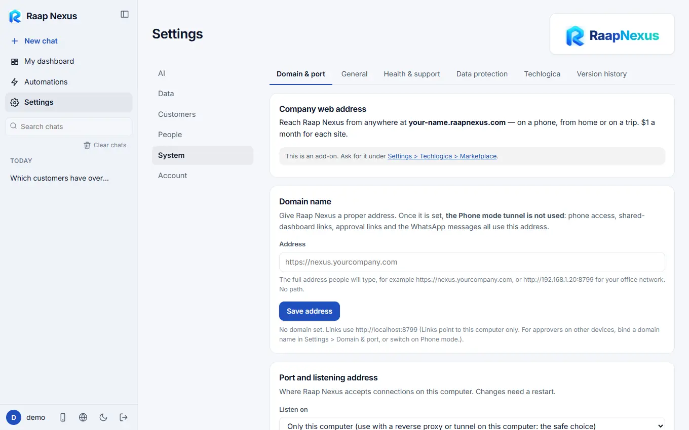
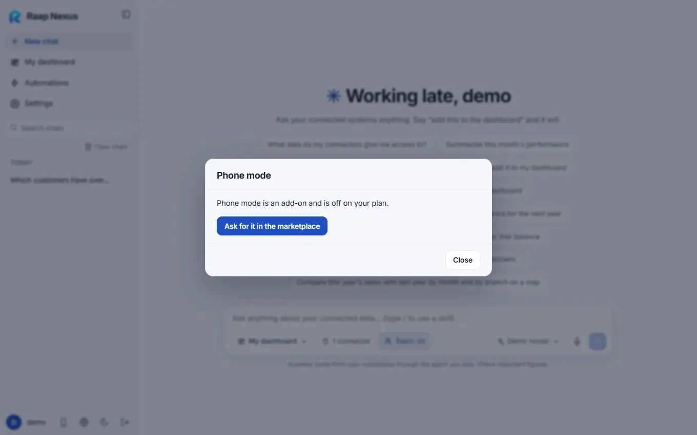

Raap Nexus
Raap NexusDomain, port and phone mode
Give Raap Nexus its own web address, choose where it listens, or open it on your phone from anywhere with a secure tunnel.
Domain and port
Open Settings > System > Domain & port.

Domain name
Give Raap Nexus a proper address, for example https://nexus.yourcompany.com or http://192.168.1.20:8787. Once it is set, phone access, shared-dashboard links, approval links and the WhatsApp messages all use this address, and the phone-mode tunnel is not used. The full address people will type goes in Address; press Save address.
A company web address of the form your-name.raapnexus.com is also available as an add-on, per site, ordered under Settings > System > Techlogica > Marketplace.
Listen on
| Choice | Meaning |
|---|---|
| Only this computer | The safe choice. Use it behind a reverse proxy or tunnel on this computer. |
| All network interfaces | Others on your network can reach it. Allow the port in the firewall; to reach it from the internet, forward it on your router. This is plain HTTP, so prefer a proxy or tunnel outside your office. |
Changes to port and listening address need a restart.
Adding the lock (HTTPS)
Raap Nexus speaks plain HTTP. For a domain with a lock, put one of these in front of it and point your domain's DNS at the machine (or the tunnel):
- Cloudflare Tunnel (recommended): create a named tunnel in the Cloudflare dashboard and route your hostname to the local address. No router changes, and Cloudflare provides HTTPS. Keep Listen on: only this computer.
- A reverse proxy such as nginx. Behind a proxy, Raap Nexus recognises your domain, uses secure cookies when the proxy says the connection is HTTPS and sees visitors' real addresses from the
X-Forwarded-Forheader. The page shows a ready-made configuration.
Phone mode

Phone mode opens Raap Nexus on your phone from anywhere. It starts a secure https tunnel (Cloudflare) to this computer and opens WhatsApp with the link ready so you can send it to yourself. This computer must stay on, and the tunnel switches itself off after a while.
- Click the phone button at the bottom of the sidebar.
- If asked, let Raap Nexus download the Cloudflare tunnel program (about 55 MB, kept in the data folder, no account needed).
- Optionally type your WhatsApp number (with country code, digits only) so your own chat opens directly.
- Press Turn on phone mode, send the message to yourself, and open the link on your phone. Turn off ends it.
While phone mode is on, anyone who has the link can reach the sign-in page. Use a strong password, do not forward the link, and turn phone mode off when you are done. The address changes each time it is turned on, so an app installed on an iPhone from it stops working then. For a permanent address, set your own domain.
If your phone cannot open the link on mobile data, that network may block the trycloudflare.com domain: try another network or set your own domain.